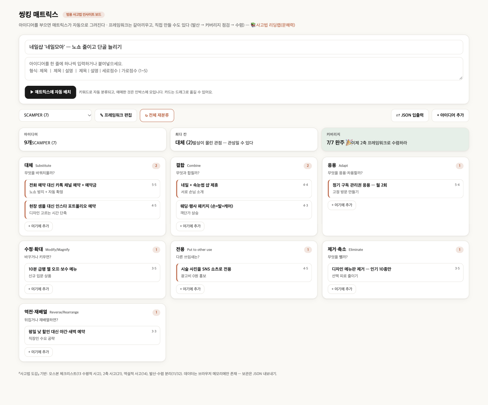

가상 사례 · 💆 뷰티·건강
💅 ‘네일모아’ 네일샵
목표: 노쇼 줄이고 단골 늘리기 — SCAMPER 7가지 질문으로 아이디어 9개를 정리했습니다.
핵심 3가지
S 대체 카톡 채널 예약 + 예약금 → 노쇼가 줄고 빈 시간이 확정 매출로
A 응용 월 2회 관리권 → 단골을 고정 방문으로
P 전용 시술 사진 → SNS 쇼츠 → 광고비 없이 신규 유입
완성 보드

렌즈별 아이디어
효과·실현성은 1~5점의 예시 점수입니다. ⭐는 둘 다 4점 이상 — “우선 실행” 후보.
대체Substitute2
무엇을 바꿔치울까?
-
전화 예약 대신 카톡 채널 예약 + 예약금노쇼 방지 + 자동 확정⭐ 효과 5 · 실현 5
-
현장 샘플 대신 인스타 포트폴리오 예약디자인 고르는 시간 단축⭐ 효과 4 · 실현 5
결합Combine2
무엇과 합칠까?
-
네일 + 속눈썹 샵 제휴서로 손님 소개⭐ 효과 4 · 실현 4
-
웨딩·행사 패키지 (손+발+케어)객단가 상승효과 4 · 실현 3
응용Adapt1
무엇을 응용·차용할까?
-
정기 구독 관리권 응용 — 월 2회고정 방문 만들기⭐ 효과 5 · 실현 4
수정·확대Modify/Magnify1
바꾸거나 키우면?
-
10분 급행 젤 오프·보수 메뉴신규 입문 상품효과 3 · 실현 5
전용Put to other use1
다른 쓰임새는?
-
시술 사진을 SNS 쇼츠로 전용광고비 0원 홍보⭐ 효과 4 · 실현 5
제거·축소Eliminate1
무엇을 뺄까?
-
디자인 메뉴판 제거 — 인기 10종만선택 피로 줄이기효과 3 · 실현 5
역전·재배열Reverse/Rearrange1
뒤집거나 재배열하면?
-
평일 낮 할인 대신 야간·새벽 예약직장인 수요 공략효과 3 · 실현 3
먼저 시작하기 좋은 것 (5개)
- 대체 전화 예약 대신 카톡 채널 예약 + 예약금 — 노쇼 방지 + 자동 확정
- 대체 현장 샘플 대신 인스타 포트폴리오 예약 — 디자인 고르는 시간 단축
- 결합 네일 + 속눈썹 샵 제휴 — 서로 손님 소개
- 응용 정기 구독 관리권 응용 — 월 2회 — 고정 방문 만들기
- 전용 시술 사진을 SNS 쇼츠로 전용 — 광고비 0원 홍보
내 가게로 바꿔서 해보기
- 씽킹 매트릭스를 엽니다.
- ⇄ JSON 입출력 → 아래 JSON을 붙여넣고 불러오기.
- 가게 이름·아이디어를 내 것으로 바꾸고, 빈 칸을 채웁니다.